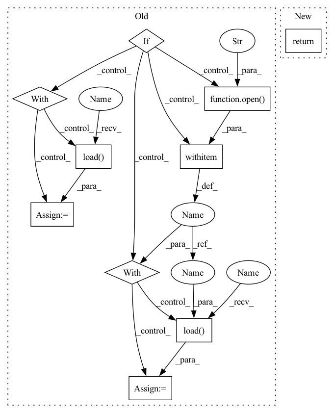

Pattern ID :4665

Before Change
def args():
parsed_args = parse_args(["--tab", "ROMP_v1"])
if os.path.exists(ConfigContext.yaml_filename):
with open(ConfigContext.yaml_filename, "r") as f:
argsdict = yaml.load(f, Loader=yaml.FullLoader)
else:
// This will write a new Yaml if the yaml doesn"t exist.
// configcontext.__forceyaml__(configcontext.yaml_filename)
with open(ConfigContext.yaml_filename, "w") as f:
d = ConfigContext.parsed_args.__dict__
yaml.dump(d, f)
with open(ConfigContext.yaml_filename, "r") as f:
argsdict = yaml.load(f, Loader=yaml.FullLoader)
for k, v in argsdict.items():
parsed_args.__dict__[k] = v
return parsed_args
After Change
self.clean()
def args():
return ConfigContext.parsed_args
// This would result in low FPS
// def args():
In pattern: SUPERPATTERN
Frequency: 3
Non-data size: 10
Instances
Fragment ID: 16728191
Project Name: arthur151/centerhmr
Commit Name: 30c45025e92971a955a244a02cfa68e969902c78
Time: 2021-09-13
Author: sunyu15@jd.com
File Name: romp/lib/config.py
M Class Name: AnonimousClass
N Class Name: AnonimousClass
M Method Name: args(0)
N Method Name: args(0)
M Parent Class:
N Parent Class:
M File Name: romp/lib/config.py
N File Name: romp/lib/config.py
M Start Line: 237
M End Line: 251
N Start Line: 234
N End Line: 234
'>
Before Change
def args():
parsed_args = parse_args(["--tab", "ROMP_v1"])
if os.path.exists(ConfigContext.yaml_filename):
with open(ConfigContext.yaml_filename, "r") as f:
argsdict = yaml.load(f, Loader=yaml.FullLoader)
else:
// This will write a new Yaml if the yaml doesn"t exist.
// configcontext.__forceyaml__(configcontext.yaml_filename)
with open(ConfigContext.yaml_filename, "w") as f:
d = ConfigContext.parsed_args.__dict__
yaml.dump(d, f)
with open(ConfigContext.yaml_filename, "r") as f:
argsdict = yaml.load(f, Loader=yaml.FullLoader)
for k, v in argsdict.items():
parsed_args.__dict__[k] = v
return parsed_args
After Change
self.clean()
def args():
return ConfigContext.parsed_args
// This would result in low FPS
// def args():
'>
Fragment ID: 16728190
Project Name: arthur151/romp
Commit Name: 30c45025e92971a955a244a02cfa68e969902c78
Time: 2021-09-13
Author: sunyu15@jd.com
File Name: romp/lib/config.py
M Class Name: AnonimousClass
N Class Name: AnonimousClass
M Method Name: args(0)
N Method Name: args(0)
M Parent Class:
N Parent Class:
M File Name: romp/lib/config.py
N File Name: romp/lib/config.py
M Start Line: 237
M End Line: 251
N Start Line: 234
N End Line: 234
'>
Before Change
def test(net, test_loader, device, window_size, batch_size, plot=True):
if plot:
with open(config.RESOURCES_DIR + "/loss.pkl", "rb") as f:
loss = pickle.load(f)
plot_learning_curve(loss, xlabel="Episode", ylabel="Loss")
with open(config.RESOURCES_DIR + "/accuracy.pkl", "rb") as f:
acc = pickle.load(f)
plot_learning_curve(acc, xlabel="Episode", ylabel="Accuracy")
with torch.no_grad():
ecgs_list = []
After Change
print("{} ACC: {:.4f}".format("testing", right / total))
return ecgs, labels_list, predicted_list
def eval (ecgs, y_true, y_pred, labels, target_names, plot_acc=False, plot_loss=False, plot_conf_matrix=False, plot_ecg=False, plot_ecg_windows_size=None):
'>
Fragment ID: 16728194
Project Name: jergusadamec/ecg-deep-segmentation
Commit Name: 0b7f33c6c37f70bfe920a0193a61f28d645e81af
Time: 2020-05-29
Author: jergus.adamec@gmail.com
File Name: engine/test.py
M Class Name: AnonimousClass
N Class Name: AnonimousClass
M Method Name: test(6)
N Method Name: test(6)
M Parent Class:
N Parent Class:
M File Name: engine/test.py
N File Name: engine/test.py
M Start Line: 48
M End Line: 86
N Start Line: 51
N End Line: 94